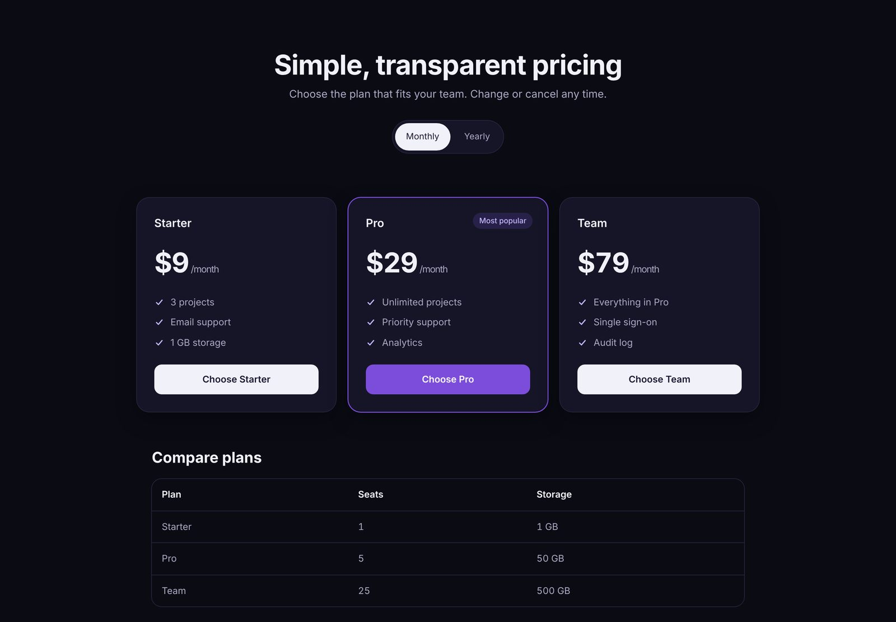
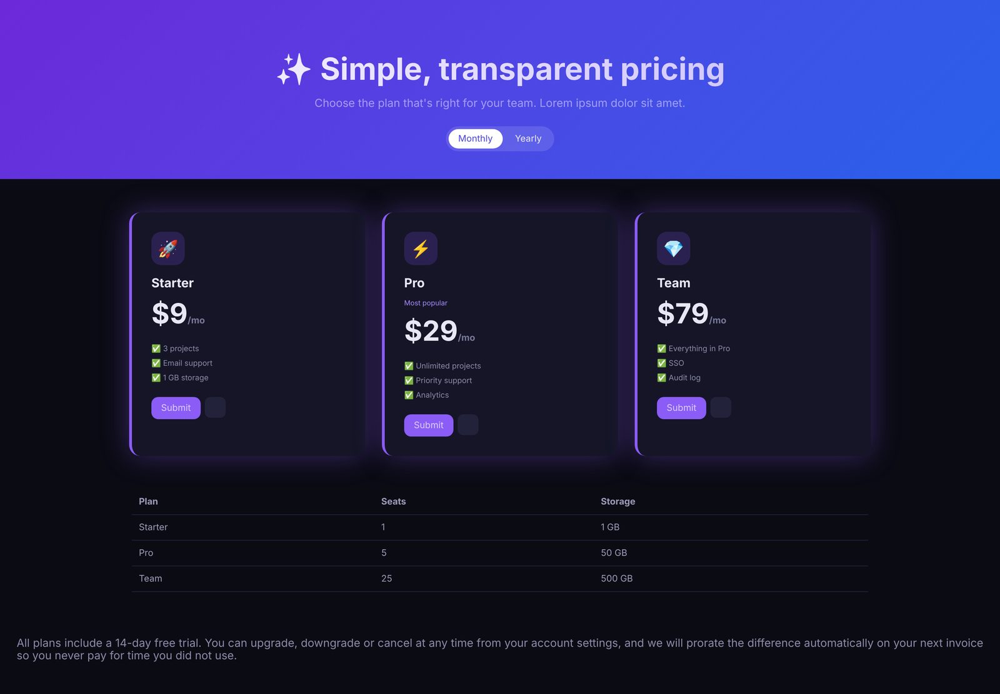
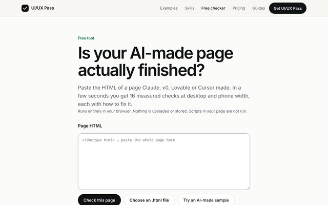
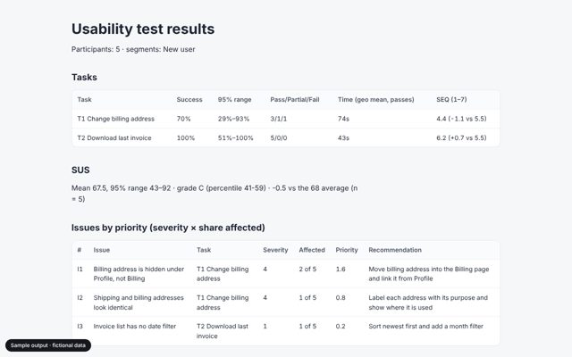
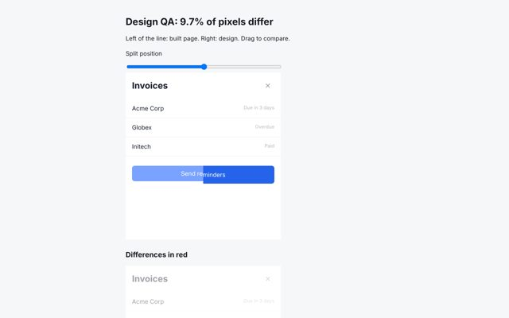
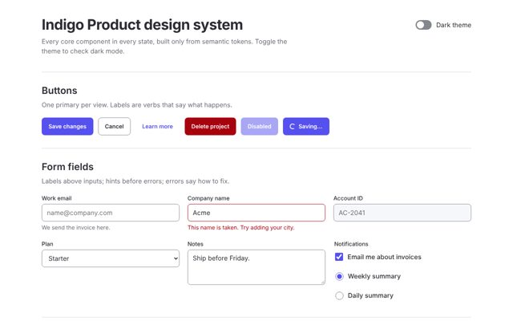
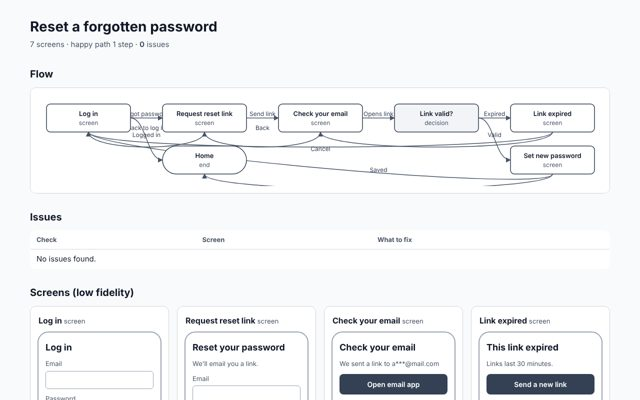
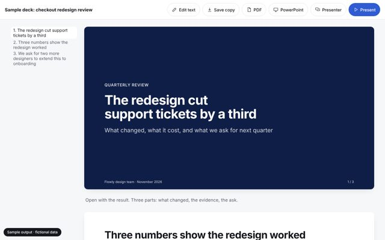

Claude Design builds it.
UI/UX Pass checks it and fixes it.
41 Claude skills for product designers and PMs. They measure contrast, keyboard focus, layout and test statistics in a real browser or with real maths, then fix what they found.
Works in Claude.ai Claude Code Cursor Codex Figma


$ check_polish.py pricing.html
Passed 38/66 · critical: 7
critical Text contrast ≥4.5:1: 6
critical Clickable things are real buttons: 5
critical No horizontal overflow at 390: 7
critical Hit targets ≥44px at 390: 3
critical Pinch zoom is not disabled: 1
critical No placeholder copy: 2
critical Respects reduced motion: 1
$ fix_polish.py (safe fixes) → 44/66
$ check_polish.py pricing.fixed.html
Passed 66/66 · critical: 0
Same content, same checker. Only the problems it found were changed.
A typical AI-made pricing page, checked at 1440 and 390 px. The skill fixed exactly the 7 critical problems found. See the full log.

How it works
Three steps, about five minutes
Add it to Claude
Upload one plugin file in Claude.ai, or copy the skills folder into Claude Code, Cursor or Codex.
Ask in plain words
Claude picks the right skill from what you ask. No commands to learn.
Check and fix this page: pricing.html
Get numbers, then the fix
The skill runs its checker, fixes what failed and runs it again, so you see 38 → 66/66, not “looks good”.
What UI/UX Pass does
Every window below is a file a skill made, not a mock-up. Open any of them.
Check a page before it ships
Contrast, focus, tap targets and overflow, measured at desktop and phone width.

Read test results honestly
Success rates with 95% ranges, SUS grade and issues ranked by how much they hurt.

Compare the build with the design
Pixel differences in red, the worst areas listed, and tickets for developers.

Start a design system that passes
Tokens in light and dark, every colour pair measured against WCAG AA, ready for Figma.

Map every path, not just the happy one
Flows checked for dead ends and missing empty, loading and error states.

Present what you found
One HTML deck that scrolls or presents, with PDF and PowerPoint export.

A note from the maker
I'm a product design lead. I run UX for AI products, and every week I review screens that AI made. The same problems keep coming back: text you can't read, buttons that aren't buttons, pages that break on a phone, research numbers with no range.
So I turned each of those reviews into a check Claude runs on its own work. Every check was tested on real pages before it shipped, and the numbers on this page are unedited.
UI/UX Pass is new and has no public reviews yet. If something doesn't work as described, write to me at support@uiuxpass.com. I read every message.
— The maker of UI/UX Pass
From people using it
What designers and PMs say
What's inside
41 skills in five kits
Claude picks the right skill from what you ask. Skills marked checker come with a script that measures the result.
Design Quality Kit
Catch what makes a product look unfinished or shut people out, before it ships.
interface-polishchecker66 browser checks on any HTML page (motion, accessibility, typography, layout, the generic AI look), a template-look check, a side-by-side with the best, and a fix mode.
sales-page-trustnewcheckerWould a stranger pay on this page? 12 buyer checks: price, a working checkout, refund policy, real proof, numbers that agree, no fake countdowns.
accessibility-auditcheckerAll 55 WCAG 2.2 A and AA criteria marked pass, fail, partly checked or manual, with code fixes. Never a false conformance claim.
design-system-checkcheckerEvery colour, font, spacing value and radius measured against your tokens: percent on-token and each value to change.
design-file-reviewcheckerReview Figma frames and screenshots before code: measured contrast and target sizes, missing states, ranked fixes.
design-qacheckerPixel diff between the build and the design export, with a drag-to-compare page and developer tickets.
heuristic-ux-copy-reviewNielsen's 10 heuristics and UX copy for a screen or a whole flow, with measured contrast and sources.
motion-designcheckerMotion tokens, component patterns and a reduced-motion plan, plus an inventory of what a page really animates.
mobile-platform-guidelinesnewchecker12 checks on real iPhone and Android viewports: 44 pt / 48 dp targets, input zoom, safe areas, bottom nav, 200% text, thumb zone.
localizationnewcheckerFinds missing translations, broken placeholders, strings too long for their button and missing plurals; pseudo-localizes to stress-test layouts.
ux-writingcheckerButtons, errors, empty states and confirmations that say what happens, with a linter for every string.
Research & Product Kit
Decide with evidence: research, tests, numbers and specs a team can act on.
usability-testcheckerPlan, script and analyse tests with real users: success rates with confidence ranges, SUS grade, issue priority.
user-interview-synthesischeckerUp to five needs with counts and verbatim quotes, and a checker that proves every quote is in your data.
survey-researchcheckerNeutral surveys and results with 95% ranges, NPS with its interval, margin of error and segment warnings.
journey-mapcheckerJourney maps and service blueprints from evidence, rendered as one accessible page that flags gaps.
product-discoverycheckerJobs to be done, opportunity trees, riskiest assumptions and RICE scores with a test of how stable the ranking is.
experiment-analysischeckerA/B test sample sizes before, and lift with confidence intervals, sample-ratio and peeking checks after.
competitive-ux-benchmarkcheckerSame tasks tested in every competitor, scored with evidence, and your biggest gaps in fix order.
product-speccheckerSpecs and handoffs engineers can build from: metrics with baselines, Given/When/Then criteria, every state.
information-architecturenewcheckerCard sorts and tree tests analysed properly (similarity, suggested groups, success with 95% ranges, first clicks), then a sitemap in your users' words.
user-flows-wireframesnewcheckerEvery path designed before polish: a checker for dead ends and missing empty, loading and error states, plus a grey-box wireframe per screen.
onboarding-activationnewcheckerNames the activation moment, audits the path to first value in 8 checks and redesigns it so new users get there faster.
product-analytics-funnelnewcheckerFunnels with 95% ranges and time between steps, cohort retention and a tracking-plan linter; the worst step becomes a design question.
ai-feature-designDesign AI features for when the model is wrong: every moment specified, controls matched to the stakes.
ai-assistant-ux-auditHands-on audit of an AI assistant: repeat runs, blind re-scoring, a 10-moment experience map and a scorecard.
Brand & Presentation Kit
Learn your brand once, then make decks, brochures, reports and social images that stay on it.
brand-kitcheckerYour brand as tokens and a contrast-checked preview, read from your guidelines, a website or just a screenshot, or a new brand from five questions.
ui-style-librarychecker36 palettes, 30 font pairings and 20 style recipes, all passing AA in light and dark. Three directions side by side.
presentation-deckcheckerDecks as one HTML file: scroll or present, presenter view, edit in place, PDF and PowerPoint export.
print-brochurecheckerA4 or A5 folded brochures with a print PDF, 3 mm bleed and crop marks.
web-reportcheckerReports as a web page: conclusion first, sourced numbers, method and confidence note.
social-graphicscheckerOn-brand posts, carousels and banners exported as exact-size PNGs with a legibility check.
product-videonewcheckerLaunch videos and GIFs written in HTML and rendered to MP4: checked for readable text, safe area, message in 2 seconds and captions.
design-case-studyPortfolio case studies in a Before–During–After story, every decision with its reason.
Design System & Figma Kit
From one colour to a complete, accessible system, in code and in Figma.
design-system-starternewcheckerTokens, light and dark themes, Tailwind preset, Figma variables, DESIGN.md and every component in every state, with all colour pairs passing WCAG AA. Three ready systems included.
figma-buildnewWrites results into Figma: your tokens as real variables with light and dark modes, prototypes as frames, review findings next to the frames they belong to.
Core
The way of working that ties every skill together.
get-startednewThe first thing to try: a two-minute demo that measures a real page, fixes it and measures again, or picks the right skill for what you have.
uiuxpass-workflowGoal, success criteria, what the best do, fixed constraints, result: every task, every time.
self-reviewcheckerFive questions and a best-in-class comparison before anything is delivered.
prototype-five-directionsFive genuinely different working prototypes from one brief, the best two recommended.
product-writingPosts, proposals and updates with one core message and a first step readers can take today.
open-imagesnewcheckerReal, openly licensed photos (CC0, public domain, CC BY) with ready credits, and a check that every image on the page is credited the way its licence asks.
Honest comparison
UI/UX Pass and the free options
Good free design skills exist and you should try them. Here is where UI/UX Pass is different, and where it is not.
| Claude on its own | Popular free design skills | UI/UX Pass | |
|---|---|---|---|
| Design guidance and style ideas | Yes | Yes, often large libraries | Yes, 36 palettes, 30 font pairings, 20 styles |
| Measures pages in a real browser | No | Some, usually a few checks | 66 checks, WCAG 2.2 mapping, token and pixel checks |
| Research and test statistics | Estimates in prose | Rarely | Confidence ranges, SUS, NPS, A/B tests, RICE stability |
| Specs, journeys, benchmarks for PMs | Ad hoc | Rarely | Templates plus checkers |
| Design system and Figma | Ad hoc values | Some generate systems | Contrast-proven tokens, light and dark, written into Figma as variables |
| Works in Cursor and Codex | — | Usually | Yes, same skills |
| Price | Included in your plan | Free | $49 once, lifetime updates |
| Where it falls short | UI/UX Pass is new: no public reviews yet, and Claude.ai's built-in Slides and Design tools take over deck and design requests unless you name the skill. We say this up front. | ||
Pricing
Pay once. Everything, forever.
No subscription. Every skill that exists today and every one we add later.
UI/UX Pass, lifetime
$49 one person, one payment
- 1 person
- $49
- Team, up to 5
- $149 $29.80 per person
- Team, up to 20
- $299 $14.95 per person
- All 41 skills and 41 checker scripts
- Design System Kit: three ready, accessible design systems
- One-file install for Claude.ai, plus Claude Code, Cursor and Codex
- Every future skill and update, free
- Fairer prices in many countries, applied at checkout
Secure checkout by Gumroad. Pick 1 person or a team licence at checkout. All sales are final, so try the free skills first.
Try it free first
Two full skills, no email tricks: heuristic-ux-copy-review and self-review.
Questions
FAQ
What do I need?
A paid Claude plan (Pro, Max, Team or Enterprise) with code execution, or Claude Code. You upload one file in Claude.ai under Plugins → Add → Upload plugin; it takes about five minutes. The checkers run inside Claude's own environment, so you install nothing.
Does it work with Figma?
Yes, both ways. Export a frame as PNG and design-file-review measures it. With Figma connected to Claude, it reads frames and variables, and figma-build writes back: your tokens as Figma variables with light and dark modes, prototypes as frames, review notes next to the frames.
Does it work in Cursor or Codex?
Yes. The skills follow the open Agent Skills standard. Run npx skills add ./skills from the download and pick your agents, or copy the folders into ~/.codex/skills or .cursor/skills.
Will Claude use the skills automatically?
Mostly yes: each skill switches on from plain requests ("is this page accessible?", "analyse this A/B test"). For decks, designs and social images, Claude.ai may open its own built-in tools instead; naming the skill ("use presentation-deck…") fixes it. The guide explains this.
I already use Claude Design. Do I need this?
They do different jobs. Claude Design makes the first version of a screen, deck or page. UI/UX Pass checks what was made, any way it was made: it measures contrast, tap targets, keyboard focus and layout in a real browser, fixes what fails and shows the score before and after. Many people use both: Claude Design to build, UI/UX Pass before it ships.
Is this made by Anthropic?
No. UI/UX Pass is an independent product. It is not affiliated with or endorsed by Anthropic. Claude is a trademark of Anthropic.
Can my whole team use it?
Yes, with a team licence: up to 5 people for $149 or up to 20 people for $299, chosen at checkout. The $49 licence is for one person. Please don't resell it or share it publicly.
Can I get a refund?
No. UI/UX Pass is an instant digital download, so all sales are final. Try the two free skills first to see how it works. If something doesn't work as described, email support@uiuxpass.com and we will fix it.
What languages does it work in?
The skills are written in English; Claude answers in whatever language you write in.
Check your next page before it ships.
41 skills, 41 checkers, one payment and every update after. Not sure yet? Run the free checker or open the examples first.